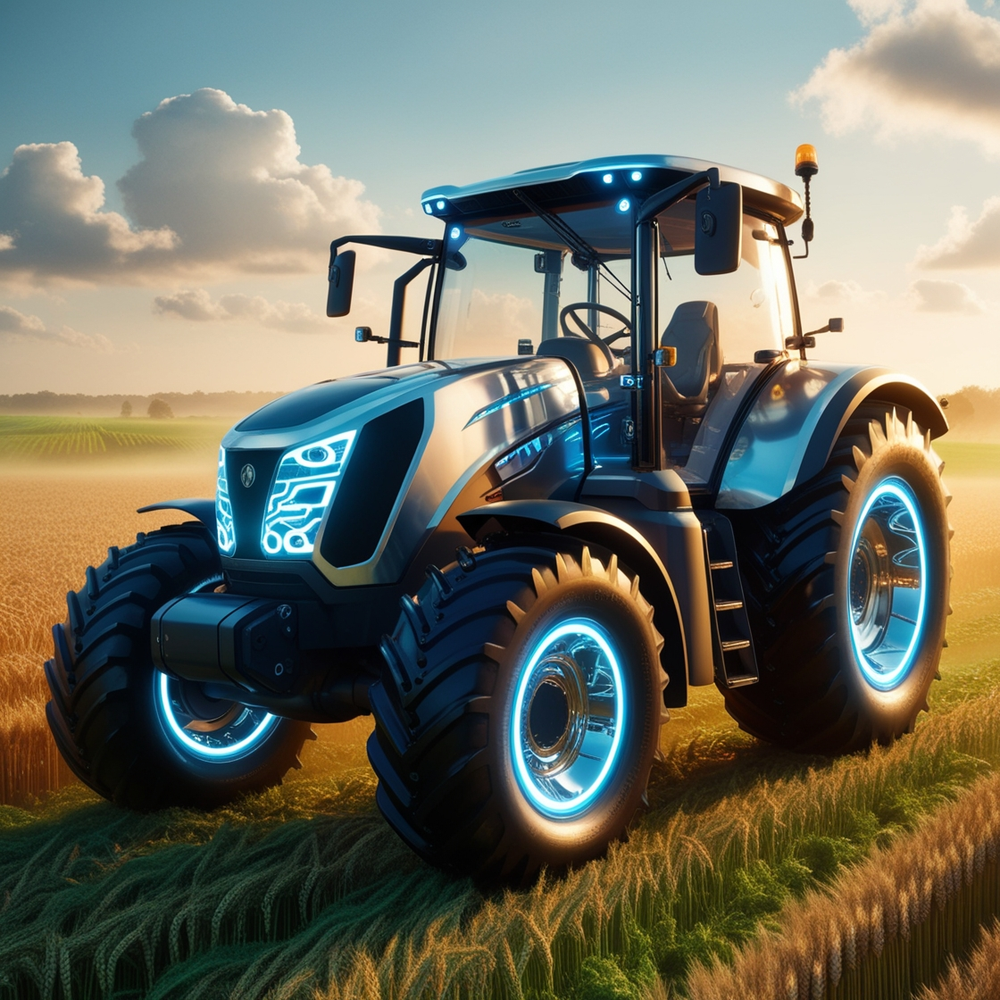

Tecnologias emergentes na inovação agrícola incluem Internet das Coisas (IoT), agricultura de precisão, Big Data e analytics, inteligência artificial, robótica agrícola, biologia sintética e genômica, blockchain na cadeia de suprimentos e agtech. Essas tecnologias melhoram a eficiência, sustentabilidade e produtividade agrícola através de monitoramento avançado, análise de dados, automação e desenvolvimento de culturas mais resistentes e nutritivas.

Práticas Sustentáveis:
Práticas sustentáveis na inovação agrícola incluem agricultura de conservação, uso eficiente de recursos como água e energia, agroecologia, adoção de energias renováveis, sistemas agroflorestais, biocontrole de pragas e doenças, monitoramento ambiental e certificações para garantir práticas responsáveis e rastreabilidade. Essas práticas visam minimizar o impacto ambiental, promover a resiliência dos sistemas agrícolas e garantir a segurança alimentar de maneira sustentável.